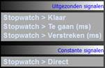
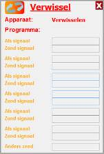
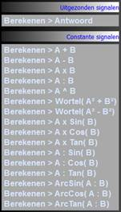
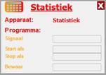
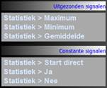

Programmastappen worden niet automatisch na elkaar uitgevoerd. Om met een andere stap verder te gaan, moet je de functie Stap naar gebruiken.
Zodra het signaal achter Wanneer? actief wordt, gaat het programma verder met de stap, die is ingevuld achter Ga naar stap.
Met de functie Stap naar kun je naar iedere willekeurige stap springen - zowel vooruit als achteruit in het progamma.

Deze functie wacht een aantal milliseconden vanaf het moment dat het signaal achter Start actief is. Als de tijd verstreken is wordt het signaal Klaar uitgezonden. De wachttijd vul je in achter Duur.
In één seconde zitten 1000 milliseconden.
Je kunt twee signalen met elkaar vergelijken maar ook een signaal en een ingevulde waarde. De functie zendt uit of de signalen groter, kleiner, gelijk of ongelijk zijn aan elkaar.
Het signaal achter Wanneer? geeft het startschot om de signalen A, B en C uit te zenden.
Afhankelijk van een testsignaal kun je twee andere signalen afgeven. Als het testsignaal actief is, wordt het signaal achter Test gelukt uitgezonden. Anders wordt het signaal achter Test mislukt uitgezonden.

Terwijl je bij de functie Testen één signaal test, kun je hier meer signalen gebruiken. Het signaal achter Zend signaal wordt doorgegeven als het signaal achter Als signaal actief is.
Als geen van de signalen achter Als signaal actief is, wordt het signaal achter Anders zend doorgegeven.
Het doorgegeven signaal vind je in de lijst met uitgezonden signalen als het signaal Actie.

Deze functie voert een berekening uit met de signalen of waarden die achter Waarde A en Waarde B zijn ingevuld.
In de lijst van constante signalen vind je de mogelijke berekeningen. Sleep één ervan naar het invulvakje achter Functie.
Deze functie maakt het mogelijk
om bij te houden hoe vaak een signaal optreedt (vul
 
De functie Statistiek houdt de gemiddelde waarde, het maximum en het minimum van een signaal bij. De waardes beslaan de periode tussen Start als en Stop als.
Wanneer achter Bewaar het constante signaal Ja is ingevuld, blijven de waardes na de meetperiode beschikbaar. Bij Nee worden de waardes na afloop op nul gezet.
Als de waardes zijn bewaard, kunnen ze in een volgende stap worden aangevuld met nieuwe waardes.